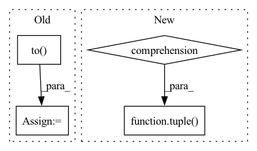

Pattern ID :8136
Before Change
)
preds = schema_to_tensor(pipeline_outputs=outputs, device=self.device)
batch["bboxes"] = batch["bboxes"].to(self.device)
batch["cls"] = batch["cls"].to( self.device)
batch["batch_idx"] = batch["batch_idx"].to(self.device)
self.update_metrics(preds, batch)
if self.args.plots and batch_i < 3:After Change
stats = self.get_stats()
self.check_stats(stats)
self.print_results()
self.speed = tuple(
x.t / len(self.dataloader.dataset) * 1e3 for x in dt
) // speeds per image
self.run_callbacks("on_val_end")
self.logger.info(In pattern: SUPERPATTERN
Frequency: 3
Non-data size: 4
Instances Fragment ID: 28757879
Project Name: neuralmagic/deepsparse
Commit Name: c0df30edbd5214eccfaaab3fdc1c46fa88a74eb3
Time: 2023-02-28
Author: 97082108+dbogunowicz@users.noreply.github.com
File Name: src/deepsparse/yolov8/utils/validation/deepsparse_validator.py
M Class Name: DeepSparseValidator
N Class Name: DeepSparseValidator
M Method Name: __call__(2)
N Method Name: __call__(3)
M Parent Class:
N Parent Class: BaseValidator
M File Name: src/deepsparse/yolov8/utils/validation/deepsparse_validator.py
N File Name: src/deepsparse/yolov8/utils/validation/deepsparse_validator.py
M Start Line: 150
M End Line: 214
N Start Line: 55
N End Line: 94
Before Change
x, labels = batch
if net.n_classes > 1:
// classification
labels = (labels * 255.0).to(device=device, dtype=torch.long) [:, 0, :, :] // get rid of extra dim for loss
else:
// regression
labels = labels.to(device=device, dtype=torch.float32)After Change
with tqdm(total=n_val, desc="Validation round", unit="batch", leave=False) as pbar:
for batch in loader:
labels = batch[-1]
x = tuple( [batch[i] for i in range(len(batch)-1)])
x = [x[i].to(device=device, dtype=torch.float32) for i in range(len(x))]
labels = labels.to(device=device)
// Predict Fragment ID: 28757891
Project Name: aangelopoulos/im2im-uq
Commit Name: 256b11fc82bbf038db0037558d9b13a5d00fc1d3
Time: 2021-06-03
Author: angelopoulos@n0025.abc0
File Name: core/scripts/eval.py
M Class Name: AnonimousClass
N Class Name: AnonimousClass
M Method Name: eval_net(3)
N Method Name: eval_net(3)
M Parent Class:
N Parent Class:
M File Name: core/scripts/eval.py
N File Name: core/scripts/eval.py
M Start Line: 8
M End Line: 39
N Start Line: 8
N End Line: 32
Before Change
SAR_out[m] = SAR[m + (dum, p_opt)]
p_opts[m] = p_opt
p_opts = pt.from_numpy(p_opts).to( SDR_out.device)
return SDR_out, SIR_out, SAR_out, p_opts
def _linear_sum_assignment_with_inf(After Change
loss_mat_npy = loss_mat.cpu().detach().numpy()
loss_out = loss_mat.new_zeros(b_shape + (n_chan_out,))
args_out = [arg.new_zeros(b_shape + (n_chan_out,)) for arg in args]
p_opts = np.zeros(b_shape + (n_chan_out,), dtype=np.int64)
for m in np.ndindex(b_shape):
dum, p_opt = _linear_sum_assignment_with_inf(loss_mat_npy[m])
loss_out[m] = loss_mat[m + (dum, p_opt)]
for i, arg in enumerate(args):
args_out[i][m] = arg[m + (dum, p_opt)]
p_opts[m] = p_opt
if return_perm:
return (loss_out,) + tuple( args_out) + (p_opt,)
else:
return (loss_out,) + args_out
Fragment ID: 28757888
Project Name: fakufaku/torchiva
Commit Name: d2b2bceef6944715a6274920e6ec7b0374367ccd
Time: 2022-01-31
Author: robin.scheibler@linecorp.com
File Name: torchiva/metrics.py
M Class Name: AnonimousClass
N Class Name: AnonimousClass
M Method Name: _solve_permutation(1)
N Method Name: _solve_permutation(3)
M Parent Class:
N Parent Class:
M File Name: torchiva/metrics.py
N File Name: torchiva/metrics.py
M Start Line: 204
M End Line: 234
N Start Line: 150
N End Line: 182